<div class="map-popup">
  <button class="map-popup__close">
    
  </button>

  

  <div class="map-warning">
    <div class="map-warning__text">
      רשות המעברים אינה אחראית למידע, לנתיבים או להנחיות המוצגים בקישור החיצוני
      (Waze/Google Maps). האחריות המלאה לנסיעה בטוחה ולבחירת המסלול חלה על
      המשתמש בלבד.
    </div>

    <div class="map-warning__actions">
      <button class="map-warning__action-reject">ביטול</button>
      <button class="map-warning__action-accept">לאישור והמשך</button>
    </div>
  </div>
</div>
